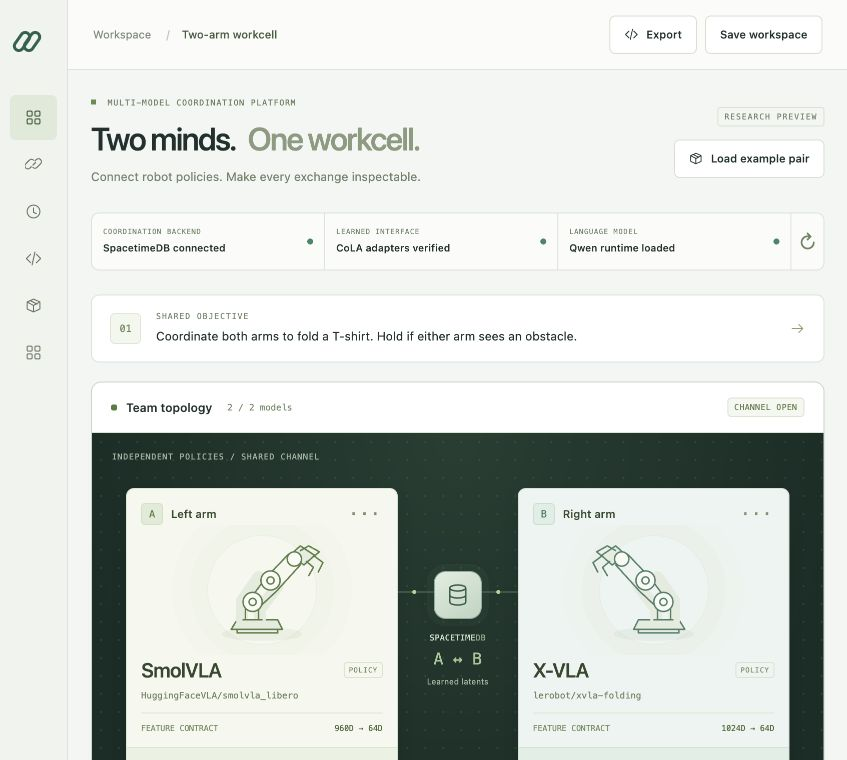
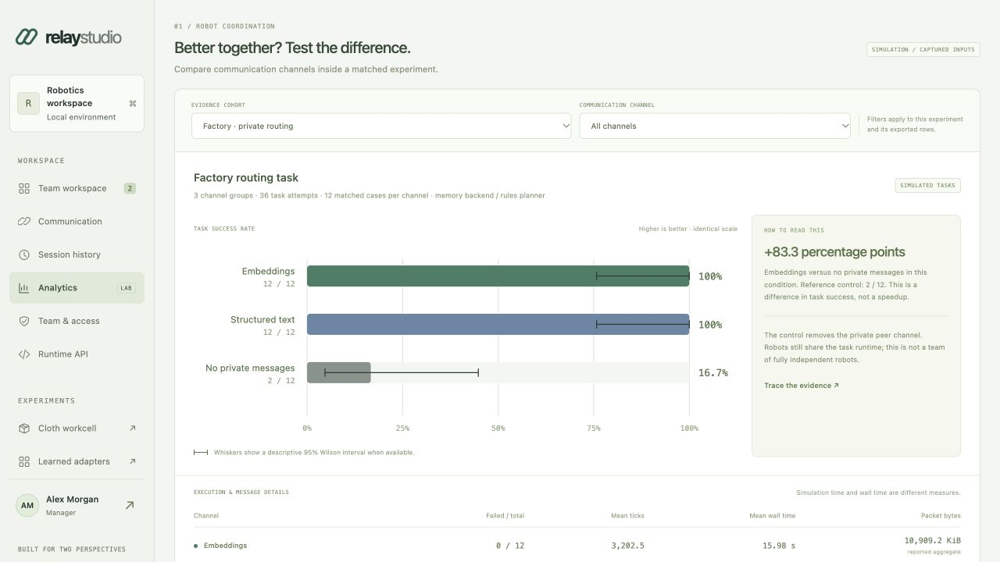

LATEST STUDIO INTERFACEModel registration, compatibility, and communication in one place.

Upstream interface capture. Register models, release exact configurations, select mediation, orchestration, learned latents, or hybrid, and inspect committed exchanges in the local application.
COORDINATION ANALYTICSMeasure communication with its evidence.

Source-backed experiment comparisons, workspace metrics, filtered exports, and engineering-effort scenarios. Scenario estimates are distinct from measured operational savings.
Inspect upstream analytics verification ↗